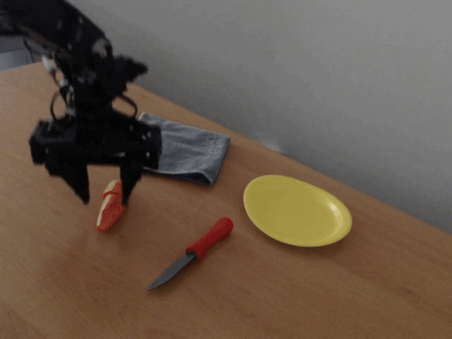

Demonstrations
Here we showcase sample demonstrations of our model's performance in various scenarios, highlighting its generalization capabilities.

Task 1: Put carrot on plate.

Task 2: Put knife on cloth.

Task 3: Place the carrot on the plate.

Task 4: Place carrot on plate.

Task 5: Put carrot on plate.

Task 6: Put carrot on yellow plate.